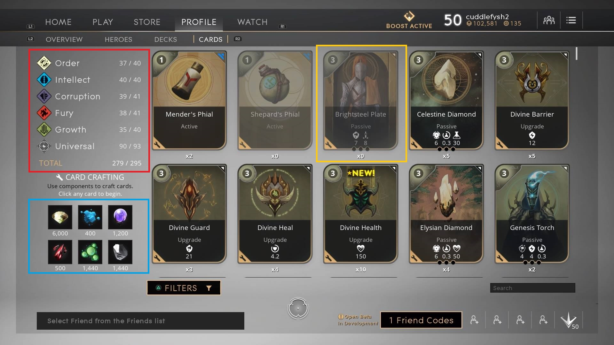
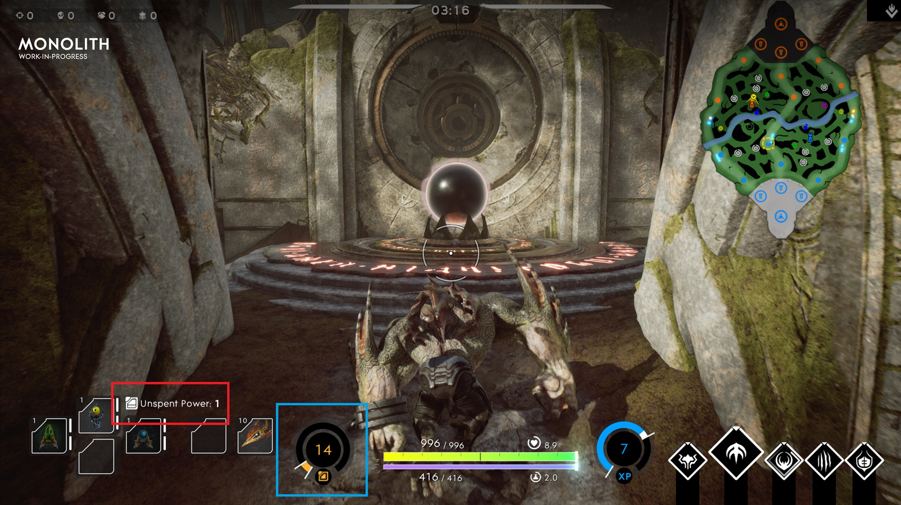

Welcome. Here you will find information on the card system in Epic Games' new MOBA Paragon. Wether you are new to the game, a seasoned verteran or just need to read up on a card you want to implement in your deck, you can can find all the card info here. This is still in developement, any feedback is welcome.
Created by JontheNerd
Here you will see all the cards available in Paragon. Hovering over a card will reveal that card's stat and or description.
Here we will break down all of the elements of how the card system works. We will look at how upgrade and equipement cards differ, card crafting, card points (CP) and more. This way you will get a good understanding of how the card system works and how to poroperly utilize your decks.
To begin you have two types of cards: Upgrade cards and Equipement cards. Equipement cards act as items you can equipe to your character boosting your stats. Upgrade cards serve as a boost for your equipement card boosting the overall effect of the equipement card.
So we have two cards above. Divine Shield is an equipement card that has three slots for upgrade cards. Major Kinetic is an upgrade card that can be slotted into an equipement card that further enhances the effect of an equipement card.
Card Crafting is a feature that allows players to destroy cards in return for elements to build a card of their choosing. This is a good way to craft the card you need to complete your deck, collect all the cards etc. Each affinity will yield a different type of element when you destroy the card. Here are the different affinities and the elements they yield: 
Let's break this image down. Inside the red box you have the different affinities that associate themselves to certain characters and cards. In the blue box you have the different types of elements you recieve from breaking down cards. And finally in the yellow box you see a card that is slightly vaded meaning that you do not own that card yet. This is a good place to start in determining what you need ot build and what cards to break down to get it.
| Affinity | Element |
|---|---|
| Order | Topaz |
| Intellect | Matrix |
| Corruption | Cursed Soul |
| Fury | Shrapnel |
| Growth | Algae |
| Universal | Metal |
Card Points or CP is the in game currency you use to equipe more cards and slot upgrade cards into your equipement cards. You gain CP from landing killing blows on enemy minions or by getting enemy hero kills. You recieve one CP at a time at a pretty decent pace.
Let's break down the image above. In game you have your Card Point counter (in the blue box). This lets you know how many card points you have accrued over the duration of the match. In the red box you have the amount of card points that you have not spent yet. You will need to really keep an eye on your unspent card points. You do not want to be running around with to many card points when you could be making your hero stronger.
Here you can find additional resources to help you better understand all there is to know about the cards in Paragon. Enjoy.